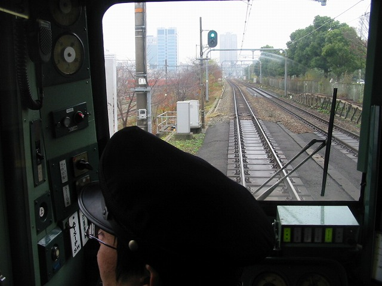
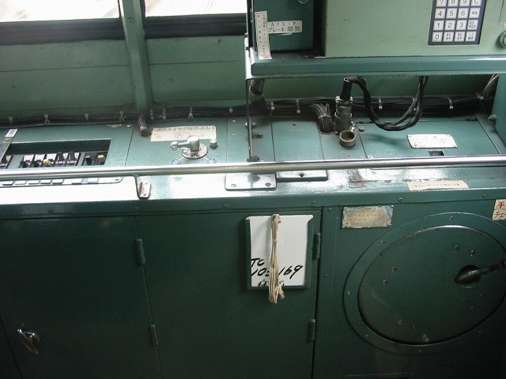

学生時代の友人と阿倍野で飲んだ帰り、天王寺で隣ホームに103-1が停まってました。
ウチ「あの車両は全国の103鉄オタの憧れで、あれを撮影するようウチも命じられてんねん。あんた、あの車両見たってんはラッキーらしいで」
友人「ふーん。 そ。 でも、あんまし嬉しくねーなー。オレ。」
これがホント普通よねえ

そんな普通じゃない尼と北京の怨念に操られて、また取材しました。
尼「先頭と中間の２両が体質改善未対応のようですね。」
は？？？？ 鉄夫、通訳してくれ～
「こんなん見て嬉しいのん？車内編」です
「今里の商店街を歩きたい」という鉄子のリクエストで、本日の行き先は今里。鶴橋までは環状線です。
来たのが103系。しゃーないなああ撮影しちゃうう？
がっちり鉄っちゃんポジションです。
扇風機
こんな写真撮ることになるとは。。。やはりあの撮影デビューで鶴橋駅に捨ててきたものは恥だったのかなあああ
乗降口（これ以上どーコメントすりゃえーんかわっからーん！）
京橋駅

京橋駅を出て、第二寝屋川を渡る直前です。ガタンガタン♪（すぐ右側がマリンビル）
渡りました。で、森之宮車庫のUSJ柄の車両発見。

なんか。
どっかの駅。行き先がユニバーサル駅ってことはーうーん（あーこんなん言うてたら鉄夫にしばかれる）
はい、これもまたどっかの駅。左上のぼんやり白いのは、運転席との間のガラスに書いてある文字

お、これ大阪城公園駅かな？ちゅーことは、これは今里からの帰りの写真やったっけな。
プチレポートでした。
こんな車内の写真を通勤範囲で撮るとはねえ。。
一人ではできないのに二人ならできてしまうのが恐ろしい。
ねー１０３の写真、まだ飽きない？＞北京＆尼
都島